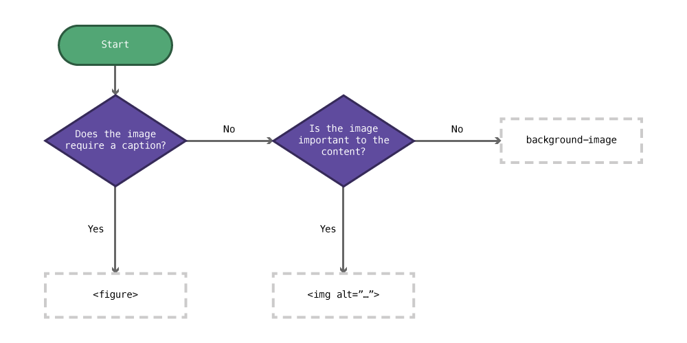
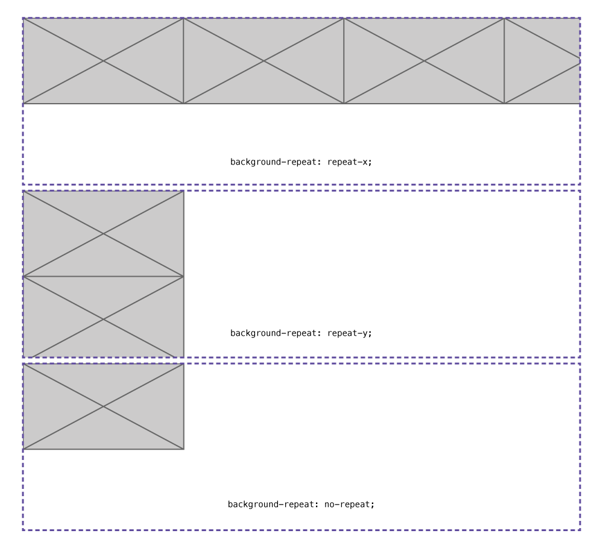
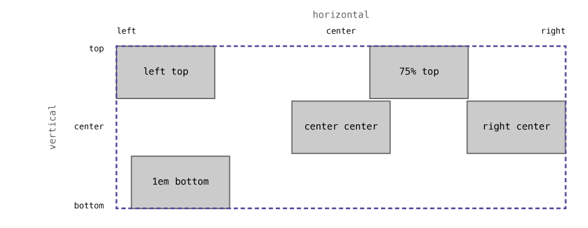
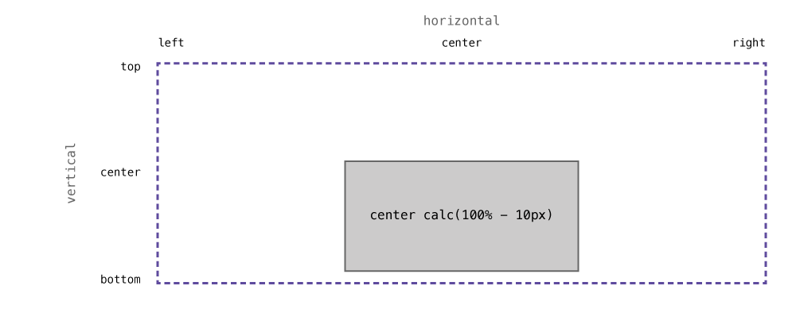
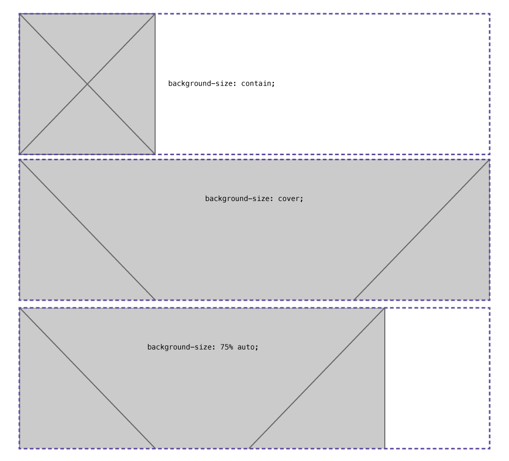
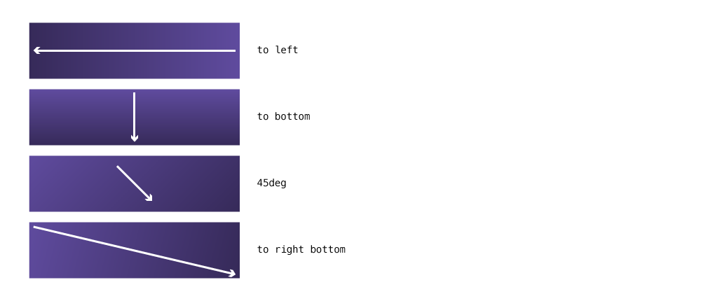
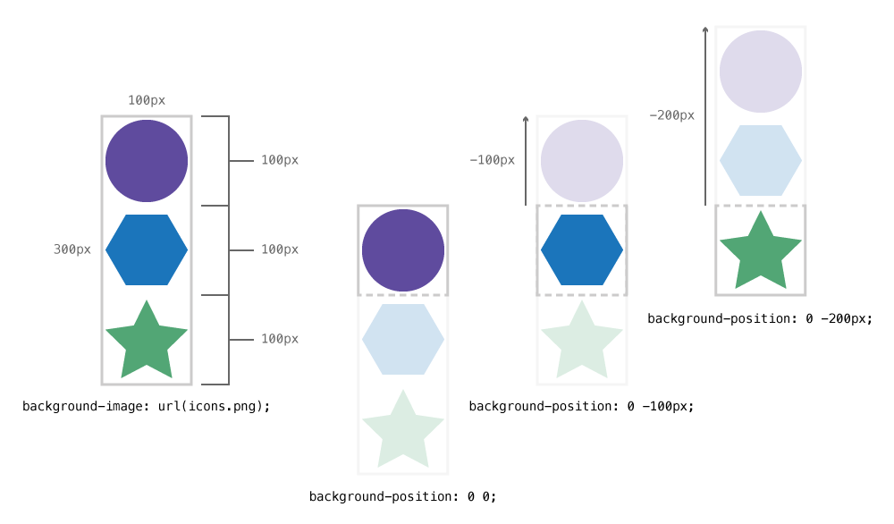

Images are a very critical part of modern web design—and there’s lots of different way to use and generate images on websites.
Choosing the right way to insert an image

- Does the image require a caption?
Yes: Use a<figure>&<figcaption>. - Is the image an important part of the content?
Yes: Use an<img>tag with an appropriatealtattribute.
No: Use a CSSbackground-image.
Any image that is purely decoration should be in CSS. If that can’t accomplish what you want an <img> tag with an empty alt attribute will suffice.
Foreground images
Foreground images, or images inserted into HTML, use the HTML <img> tag.
Use the <img> tag when the image is an important part of the content—when the content would be confusing without the image.
<img src="images/logo.jpg">
<img src="images/icons/planet.jpg">
<img src="../images/photo.jpg">
☛ Refer to the tutorial on paths
Links
Alt attributes
All images inserted with the <img> tag must have an alt attribute:
<img src="pluto.jpg" alt="Photo of Pluto">
The alt attribute has two purposes:
- To describe the photo if it doesn’t download in the browser
- To describe the photo to someone who cannot see the image, maybe someone using a screen reader
When describing the image you should think about what content is most helpful for a user who cannot see the image. Describe what is important about the image.
- Is the image fancy text? Then just write the word.
- Is it a photo of a planet taken by a telescope? Write something like “Photo of Pluto taken with Hubble”
- Is the photo meant to highlight a point? Write just the point, e.g. “Classic painting showing the triangle composition”
- Is the graphic a chart? Describe the purpose of the chart, e.g. “A bar graph representing the orbital periods of planets in the Solar System”
- Does the graphic not add any relevant information? Then it should be in your CSS. If that’s not possible, leave the
altempty,<img alt="">
Links
- Simply Accessible: Images in Context
- Simply Accessible: Descriptive Alt Attributes
- W3: Techniques for providing useful text alternatives
- When is an image ‘purely decorative’?
Figures & captions
Often you’ll need to provide a caption for your image, that’s where the <figure> element comes in handy.
<figure>
<img src="pluto.jpg" alt="">
<figcaption>Photo of Pluto taken with the Hubble Telescope</figcaption>
</figure>
Using the <figure> and <figcaption> elements we can associate a caption with an image.
You’ll notice that the alt attribute is empty in this situation. Often it’s not needed because the content of the caption would be no different than the alt attribute so we don’t want the information repeated.
Only use the figure element if your image needs a caption, if you don’t need a caption, don’t use the figure.
Links
Background images
Background images are inserted in CSS and do not use the HTML image tag. Use background images when the image is purely for decoration.
Background images can be inserted onto absolutely any HTML element, using the CSS property background-image:
body {
/* Will add a background to the whole page */
background-image: url("../images/grey-box.png");
}
The url() function requires you to specify the image in relation to the CSS document. If your CSS file is inside a folder the path will need to exit that folder using ../.
☛ Refer to the tutorial on paths
Links
I can’t see the background image
First, double check that you’ve spelled the file name properly and that the path is correct. Use the developer tools to confirm the image is loaded by the browser.
You will only be able to see the background image if the containing element takes up space on the screen—either by having content or having a height.
<div></div>
div {
background-image: url("../images/pic.jpg");
}
In the scenario above, we wouldn’t see the background image because the <div> has no content inside it. Elements that have no content collapse to 0 pixels tall.
We could solve this problem in a few ways:
Put something inside the <div>:
<div>
<h1>Dinosaurs!</h1>
</div>
Add a height to the <div>—not a very good solution:
div {
height: 14em;
}
Add padding-top to the <div> to expand it’s dimensions—a good solution for maintaining aspect ratio:
div {
padding-top: 4em;
}
Maintaining aspect ratio
If we want the element that has a background image to maintain the aspect ratio of the image we can use padding-top in percents. This is a great solution for banner graphics and responsive sites, especially used together with position: absolute and background-size.
First we have to figure out the percentage for the aspect ratio of our image. Here’s the formula to do that:
(image height ÷ image width) × 100
As an example, an image with these dimensions: 1920 × 1080
(1080 ÷ 1920) × 100 = 56.25
So, our CSS would look like this:
div {
padding-top: 56.25%;
}
When used with background-size we can scale the element to fit the same aspect ratio of the image.
Background repeat
By default the background image will try to form a pattern by repeating itself both horizontally and vertically.

To control the patterning effect of the background image you can use background-repeat:
no-repeat— shut off repeating, showing the image only oncerepeat-x— pattern only horizontallyrepeat-y— pattern only verticallyrepeat— the default, pattern both horizontally and verticallly
body {
background-repeat: no-repeat;
}
h1 {
background-repeat: repeat-x;
}
Links
Background position
The background-position allows us to control where in the element the image is located. We can use keywords, percents, or fixed measurements.

When defining background-position we must always specify the horizontal & vertical positions—horizontal first, vertical second.
keywords— move the the element to specific set points:top,bottom,left,right,center%— align the images point at that percentage to the element’s point at that percentage—keywordsjust map to percentagespx,em,rem— always start in the top-left corner of the image and the element
body {
background-position: right bottom;
/* Same as: */
background-position: 100% 100%;
}
h1 {
background-position: center top;
/* Same as: */
background-position: 50% 0;
}
div {
background-position: 10px 10px;
}
If you want to move the background image a fixed measurement from the bottom or right you can use calc():

div {
/* Centered horizontally, 10px up from the bottom */
background-position: center calc(100% - 10px);
}
Links
- CSS-Tricks: I like how percentage background-position works
- MDN: background-position
- CSS-Tricks: background-position
- Codrops: background-position
- Adobe: A Primer To Background Positioning In CSS
Background size
The CSS background-size property allows us to scale the image.

cover— scale the image to fill the whole elementcontain— scale the image so all of it is visible in the elementauto— maintain the aspect ratio when scaling%— scale the image based on the element its insidepx,em,rem— scale the image to a fixed measurement
Just like background position we must style first the horizontal size then the vertical size. Or we can use a couple keywords for scaling.
body {
/* Scale the image to be 70% the width of the container, figure out the correct height */
background-size: 70% auto;
}
h1 {
/* Fill the whole element with the image */
background-size: cover;
}
div {
/* Figure out the width, set the height to 200 pixels */
background-size: auto 200px;
}
Links
Background attachment
Background attachment allows us to control how the image scrolls: either it scrolls with the page, or stays in place:
fixed— image doesn’t move when scrolling the pagescroll— default, the image moves with the element its inside
body {
background-attachment: fixed;
}
Links
Multiple background images
An element can has as many background images as you’d like, just separate each image with a comma:
body {
background-image: url("grey-box.png"), url("dark-grey-box.png");
}
After specifying multiple background images all the other properties can then have commas to control the other images:
body {
background-size: 100px auto, 75px auto;
background-position: left top, right top;
/* One value will apply to all images */
background-repeat: no-repeat;
}
Gradients
The browser can generate background images for us in the form of gradients: linear, radial, and repeating variants.
Linear gradients
Linear gradients are a gradient built in a single direction, we can specify the direction of our gradient as well as many colour stops.
body {
/* linear-gradient(direction, colour stops…) */
background-image: linear-gradient(to right, purple, darkpurple);
}
Direction
The gradient direction is specified similarly to background-position.

to left— completely flat, starting at the right and moving to the leftto right bottom— starting in the left-top corner and moving to the right-bottomto bottom— straight up and down
The direction can also be written using degrees
45deg— a 45° angled gradient-12deg— a -13° angled gradient
body {
background-image: linear-gradient(to left, purple, darkpurple);
background-image: linear-gradient(to right bottom, purple, darkpurple);
background-image: linear-gradient(45deg, purple, darkpurple);
}
Colour stops
With gradients we can specify as many colour stops as we’d like, with of course, a minimum of 2.
Here’s a rainbow gradient:
body {
background-image: linear-gradient(to right, red, orange, yellow, green, blue, indigo, violet);
}
With colour stops we can also specify their position using a value:
body {
/* This gradient will create a sharp line between red & blue at 40% */
background-image: linear-gradient(to bottom, red, red 40%, blue 41%, blue);
}
Radial gradients
Radial gradients are based around an ellipse or circle, which are the first argument.
body {
background-image: radial-gradient(circle, green, darkgreen);
}
Repeating gradients
Repeating gradients both linear and radial allow us to create simple patterns.
div {
/* Warning stripes */
background-image: repeating-linear-gradient(45deg, yellow, yellow 10%, black 10%, black 20%);
}
Links
- Ultimate CSS Gradient Generator
- MDN: linear-gradient
- MDN: radial-gradient
- MDN: repeating-linear-gradient
- MDN: repeating-radial-gradient
- Codrops: linear-gradient
- Codrops: radial-gradient
- Codrops: repeating-linear-gradient
- Codrops: repeating-radial-gradient
Shorthand
All of the above background properties can be combined together into a shorthand notation, similar to font.
background:background-imagebackground-position/background-sizebackground-repeatbackground-color
body {
background: url("bg.jpg") left top / 100px auto repeat-y red;
}
It can even be used with multiple background images:
body {
background:
url("grey-box.png") left top / 100px auto no-repeat,
url("dark-grey-box.png") right top / 75px auto no-repeat,
linear-gradient(to bottom, transparent, rgba(0,0,0,0,5))
;
}
It’s sometimes nice to add each image on its own line for clarity.
Links
- Six Revisions: CSS Background Shorthand Property
- MDN: background
- CSS-Tricks: background
- Codrops: background
Sprites
Sprites allow us to combine our images into a single file in Photoshop and using background-position show only a single part of the image at a time.
<div class="icon icon-circle"></div>
<div class="icon icon-hex"></div>
<div class="icon icon-star"></div>

.icon {
width: 100px;
height: 100px;
background-image: url("icons.png");
background-repeat: no-repeat;
}
.icon-circle {
background-position: 0 0;
}
.icon-hex {
background-position: 0 -100px;
}
.icon-star {
background-position: 0 -200px;
}
We adjust the position of the background image to only show a portion of it in the element—kind of like a clipping mask.
Changing images on hover
The best way to change images when you hover is to use sprites: create a sprite with both the default and the hover versions of the images, then just apply some CSS.
.star {
display: inline-block;
width: 50px;
height: 50px;
background: transparent url("../images/star.svg") no-repeat 0 0;
}
.star:hover {
/* Change the background position on hover */
background-position: 0 -50px;
}
The trick is to just adjust the background position when the user hovers over the element.
Links
Image replacement
Image replacement is a technique to replace text on the page with an image in an accessible manner.
The technique is useful when you cannot produce the text style you’d like in CSS.
<h1 class="masthead ir">Rainbows</h1>
.ir {
/* The technique pushes the text off the side of the element and chops it off */
overflow: hidden;
text-indent: 100%;
white-space: nowrap;
}
.masthead {
background: url("rainbow.jpg") left top no-repeat transparent;
/* Put a min-height on the element equal to the image’s height */
min-height: 100px;
}
Links
Patterns
Patterns are simple to use in CSS because of the background-repeat property, but not always the easiest to set up. Check out the video where I debug a pattern.
Links
Border images
Border images allow us to slice an image into 9 pieces and use those pieces on a border instead of the built-in border styles.
Links
- CSS-Tricks: Understanding border-image
- Border image generator
- MDN: border-image
- Code It Down: Border image
Video list
- Using images: HTML image tags
- Using images: alt attributes
- Using images: figures
- Using images: background images
- Using images: multiple background images
- Using images: gradients
- Using images: CSS sprites
- Using images: changing image on hover
- Using images: image replacement
- Using images: patterns
- Using images: border images
- Using images: creating a button
- Using images: hero banner with background images
- Using images: improving the toggle nav